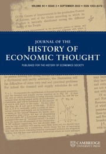
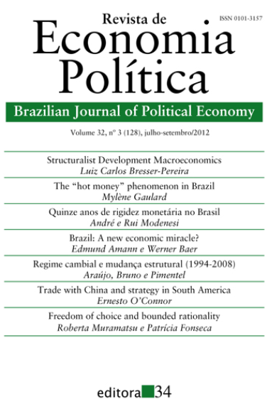

In this article, Maria mixes three theories together which I will now unentangle:
1: Adam Smith allegedly offers a model of economic development in both his Lectures on Jurisprudence and the Wealth of Nations— but all the examples Smith uses are exceptions to his allegedly theoretical model, a strange choice if Smith really wanted to use that model to explain development. I suggest Smith is criticizing rather than endorsing. He tells us we are naturally driven to build models, to build systems, to imagine “invisible chains which bind together all these disjointed objects … [thus] … introduc[ing] order into this chaos of jarring and discordant appearances.” What if he was saying that our tendency is to do that even though reality does not fit the model?
2: Perhaps the models we create are not meant to necessarily be correct or definite, rather are meant to be replaced by better systems in the future.
3: The four stages are a taxonomy of different relations between means of production and social, moral, political, and legal institutions, not a model of development from one stage to another. It may not be an accident that Smith tends to use “state of society” rather than “stage of society.”
 |
The Death of “Econ 101” by Unlearning Economics from Current Affairs2022 Oct 19
Click on this article for more about the minimum wage controversy (evidence studies).
Despite what self-appointed economics experts on the internet may say, my claim that basic economics is not sufficient for policy analysis is not controversial within the discipline of economics. If I were to say in a labor economics seminar that “the most basic model we have fails to make sense of the evidence on policies like the minimum wage,” nobody would bat an eyelid. In fact, the point is so obvious it would scarcely be worth mentioning. Yet when “economics” travels into the political sphere it becomes more rigid and doctrinaire, often promoted by people with limited knowledge of the actual ideas they're claiming to endorse (though sadly, also by people who should know better, as we'll see).
Response to this quote:
Although Buchanan is obviously correct that ideas taught in physics 101, like “gravity makes things fall,” are pretty reliable, no self-respecting physicist or engineer would analyze the real world or design a plane using the introductory model with gravitational force but no friction or spin, not to mention promoting a view of physics with no considerations at the level of quantum mechanics or general relativity. Similarly, no economist, pundit, or policymaker should be recommending real world policies based on the Econ 101 model.Accepting that the introductory demand-supply model has limited relevance is the scientific thing to do.
|
| Why stinky sweat is good for you - Michealeen Doucleff on NPR's All Things Considered
Staphylococcus hominins, one of the 200 or so bacteria on some people's skin, produces an onion smell after eating the sweat it finds on the body. It also kills MRSA(!!!) by punching holes in its cell membrane. As the water evaporates, sweat antibiotics increase in concentration. So it kind of leaves a little coating on your skin. Onion-smelling sweat is antibiotic juice. Don't worry about washing it off; the good stuff is deep in your pores.🦠 2022 Aug 25 |
| New Evidence The current moon formation theory is called giant impact hypothesis: our planet was hit, with giant impact, by Theia, who was blown to pieces and sent a huge chunk of Earth careening into space. That material continued to swirl around the planet and some of it stuck together to form the moon. The new evidence: six lunar meteorites recovered by NASA from Antarctica in the early 2000s were found to contain helium and neon trapped in tiny glass beads, which were formed in volcanic eruptions on the lunar surface as magma was pulled up from the moon's interior. These noble (unreactive) gases appear to have originated on Earth, and were likely inherited by the moon during its formation. Lunar rocks show a striking similarity to Earth rocks, albeit with some differences. One difference is a lighter version of chlorine, pointing to a dramatic event early in the history of our two worlds that separated some material. Most scientists now agree this event was a gigantic collision. Had these gases instead been transported across space into the moon by solar winds, we'd expect there to be much much lower quantities present in the meteorites analyzed. The next step is to understand how Earth got its noble gases.🔬 2022 Aug 17 |
 |
Adam Smith and Economic Development in Theory and Practice: A Rejection of the Stadial Model? by Maria Pia Paganelli from Journal of the History of Economic Thought (Cambridge Core)2022 Feb 14 |
| The Difficulty of Economic Diversification in Oil Exporting Countries & the Need for Financial Rules by Dr. Raja Al-Marzouqi, Chief Economic Adviser from the Ministry of Economy and Planning2022 Jan 01
Despite the efforts made, successive plans, and initiatives begun since the 1970s, economic diversity has proven difficult to achieve in the oil exporting countries that did not adopt sufficient macroeconomic policies to neutralize the fluctuations of oil revenues on the local economy. As a result, oil sector shocks raise the degree of risk and lead to a disruption of the relationship between the tradable sectors and the non-tradable sector, despite the fact that the nominal exchange rate is fixed with the dollar.
Government spending is affected by oil revenues up and down, leading to instability of the national economy, and posing risks to long-term private investment.
At the rising oil revenues stage, spending increases greater than the absorptive capacity of the economy, thus raising inflation, wages, and real estate prices. This raises economic costs for producers in tradable sectors, weakens the competitiveness of the local economy and reduces the attractiveness of the economy to invest in long-term development projects.
Recommendation:
One of the most significant tools to achieve stability, mentioned in the economic literature and proposed by international organizations, such as the International Monetary Fund (IMF), is the fiscal rules for fiscal policy. Some of its most important features, are determination of the mechanism for pricing oil for budgetary purposes, based on historical and future average oil prices for a number of years, and directing part of the budget surpluses to a budget balance fund, an sovereign wealth fund (long-term) and a local development fund, in addition to determining the percentage of spending for local income and setting ceilings for revenues, as well as public debt. Moreover, tax rates should be fixed during different periods of oil price fluctuations, with the possibility of changing them slightly for fiscal policy purposes.In contrast, in low oil prices period, oil governments resort to one of the following two policies. The first policy is to reduce spending as much as possible. Development sectors, such as health and education, suffer most. These are essential for achieving sustainable development. The second policy is to focus on non-oil revenues by raising taxes and fees to maintain the high level of government spending, which has been inflated by oil revenues. This policy inevitably increases the cost of business to the private sector, weakens the purchasing power of an individual's income, reduces real wage, thereby reducing productivity, or the private sector is forced to raise nominal wages to maintain purchasing power to avoid a decline in productivity. In a country like the Kingdom, more than 50% of employees in private sector are non-Saudis, it is expected that higher wages are required to accept employment in the Kingdom. This raises the wage bill and weakens the competitiveness of the private sector. As an economic result of the increased non-oil revenues, aggregate demand will decrease and business performance costs will rise, and the economy begins to seek a new equilibrium point. Medium-term budgets should be built for 3 years at the sectoral level, according to medium-term development plans, thus helps to know the trends of government spending, not only for one year, but for 3 years. It will contribute to the ability of the private sector for investment planning with better certainty and lower risk; it is one of the most important drivers of private investment. In order to achieve the desired benefits from fiscal rules, they must be clear and institutionalized, raising investor confidence and contributing to the stability of the economy. Current Picture: One of the most reliable recent initiatives is what the Minister of Finance announced during the Financial Stability Conference in November 2021, organized by the Capital Market Authority (CMA), that the government will adopt fiscal rules to manage the state's fiscal policy and deal with financial surpluses; its details may be announced later. These initiatives may be an important step that contributes to economic diversification. |
| Economic perspectives from the global south and why they matter for economics worldwide by Irene van Staveren from International Journal of Pluralism and Economics Education (InderScience) 2020 Sep 03 seilgjl
|
| Enhancing welfare without a theory of welfare by Daniel M Hausman from Behavioural Public Policy (Cambridge) 2019 Oct 14
How do we determine what promotes wellbeing?! Assuming that satisfying preferences = wellbeing naturally results in any outcome = wellbeing. This is useless. So how can we tell which choices are "better" than others? There is no scientific way to know! To get around this problem of welfare evaluation, BSist Robert Sugden proposes that number of opportunities should replace wellbeing as a criterion to appraise institutions and policies.
In Sugden's view, behavioral economists have conjured up fictitious inner rational agents, whose preferences paternalistic policies satisfy. The case for paternalism collapses without these ghosts, ready to approve of the wise and benevolent policies behavioral economists endorse. [...] There is no way to tell whether influencing their choices might benefit them and no justification for paternalism, whether coercive or 'libertarian'.Hausman notes that Sugden counts him among the ranks of deluded BSers!
Hausman, after much grumbling, agrees with Sugden's 2018 thesis, but he also points out that economists need some way to measure opportunities, which cannot be done without an appraisal of the values of the alternatives- AKA paternalism. This is an issue that Sugden's current work avoids, "although he was an early and influential contributor to this very debate in 1982." Hausman speaks as if he's going to offer a solution, but eventually admits defeat. At this time, he advises a reliance on "truisms," "folk theory," or "commonsensical value judgments" to determine what things make life better.
Conclusion: The author argues that preferences can be used as an indicator of wellbeing when paired with commonsense judgment.
|
| Bounded interdisciplinarity: critical interdisciplinary perspectives on context and evidence in behavioural public policies by Joran Feitsma, Mark Whitehead from Behavioural Public Policy (Cambridge)2019 Sep 24
This paper argues that BPP, known for its ‘geniune interdisciplinarity’, actually merely fuses economics with certain branches of psychology. BPP's lack of engagement with a broad range of relevant social sciences (such as the authors' fields of geography and public administration) limits the capacity for comprehensiveness and disruptiveness that truly interdisciplinary work is capable of. BPP is missing integration with researchers that adopt open-ended, ethnographic methodologies and, more specifically, the study of how class and race contribute to decision-making. RCTs are often short-sighted, expensive, and inconclusive.
|
| Going along with the default does not mean going on with it: attrition in a charitable giving experiment by Alexia Gaudeul, Magdalena C Kaczmarek from Behavioural Public Policy (Cambridge)2019 Jul 9
Along with providing evidence from various follow-up studies, this paper tests the actual donations of those who have pledged to donate as coerced by the default choice. Conclusion: those who pledge only because it's the default choice are less likely to take further steps to donate than those who pledge when pledging is against the default.
|
| Changing Culture a “Nudge” at a Time - KNOWLEDGE@WHARTON on TLNT
Part I of this article is about Stephanie Lampkin's Blendoor. Part II is about a nudge at a different company, Humu:
|
 |
Structuralist macroeconomics and the new developmentalism by Luiz Carlos Bresser-Pereira from Brazilian Journal of Political Economy (Centro de Economia Política)2012 Jul 01 |
“Just as no physicist would claim that “water runs uphill,” no self-respecting economist would claim that increases in the minimum wage increase employment. Such a claim, if seriously advanced, becomes equivalent to a denial that there is even minimal scientific content in economics, and that, in consequence, economists can do nothing but write as advocates for ideological interests. Fortunately, only a handful of economists are willing to throw over the teaching of two centuries; we have not yet become a bevy of camp-following whores.”
James M. Buchanan, 1986 Nobel laureate in economics, writing in the Wall Street Journal on April 25, 1996
from Quotation of the Day
James M. Buchanan, 1986 Nobel laureate in economics, writing in the Wall Street Journal on April 25, 1996
from Quotation of the Day